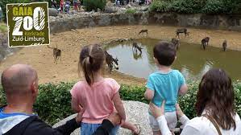
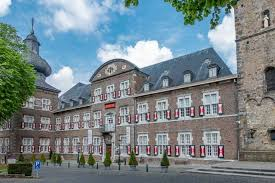

| GaiaZOO is een dierentuin gelegen in Kerkrade, in het zuidoosten van de Nederlandse provincie Limburg. GaiaZOO werd in 2005 geopend en is vernoemd naar Gaia, godin van de aarde. Tot 2011 heette de dierentuin GaiaPark. Het park van 25 hectare ligt in de Anstelvallei en is onderdeel van de toeristische zone Parkstad Limburg, waar ook attracties zijn te vinden als Snowworld en Megaland. |  |
| De abdij Rolduc is een voormalige abdij in het Kerkraadse stadsdeel Rolduckerveld in het Nederlands-Limburgse bisdom Roermond nabij de Duitse grens. De abdij speelde een belangrijke rol bij de ontginning van dit gebied en bij de vroegste steenkoolwinning. De oorspronkelijke naam was Abdij van Rode of Kloosterrade, afgeleid van het toponiem -rode (ontgonnen plaats). Vlakbij ligt de plaats Herzogenrath, hoofdplaats van het Land van 's-Hertogenrade, met de Burcht van Rode. In de Franse tijd werd de naam 's-Hertogenrade verfranst tot Rode-le-Duc. |  |